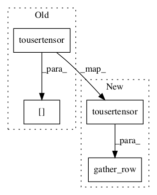

d30a69bf277effd9a013ddd81fa33661f2e31a01,python/dgl/nodeflow.py,NodeFlow,map_to_parent_nid,#NodeFlow#Any#,328

Before Change
nid = utils.toindex(nid)
// TODO(minjie): should not directly use []
return self._node_mapping.tousertensor()[nid.tousertensor()]
def map_to_parent_eid(self, eid):
This maps the child edge Ids to the parent Ids.
After Change
The parent node id array.
nid = utils.toindex(nid)
return F.gather_row(self._node_mapping.tousertensor(), nid.tousertensor())
def map_to_parent_eid(self, eid):
This maps the child edge Ids to the parent Ids.
In pattern: SUPERPATTERN
Frequency: 3
Non-data size: 4
Instances
Project Name: dmlc/dgl
Commit Name: d30a69bf277effd9a013ddd81fa33661f2e31a01
Time:
Author: null
File Name: python/dgl/nodeflow.py
Class Name: NodeFlow
Method Name: map_to_parent_nid
Project Name: dmlc/dgl
Commit Name: d30a69bf277effd9a013ddd81fa33661f2e31a01
Time:
Author: null
File Name: python/dgl/runtime/spmv.py
Class Name:
Method Name: build_gidx_and_mapping_uv
Project Name: dmlc/dgl
Commit Name: d30a69bf277effd9a013ddd81fa33661f2e31a01
Time:
Author: null
File Name: python/dgl/nodeflow.py
Class Name: NodeFlow
Method Name: map_to_parent_eid